Approved F source tabs with the straight red brush trail
Alfredo approved demos 5–8 and F’s temporary bow/katana tab. Updated after Alfredo’s overlap feedback: the complete spear/Unit Force ribbon slides down first (160 ms), then the attack tab slides out (180 ms). Dismissal reverses the sequence. These native captures show the revised layout; both the spears and Force value remain clear. The generated atlas is a faithful dedicated derivation, not a whole-screen pixel-equivalence claim.
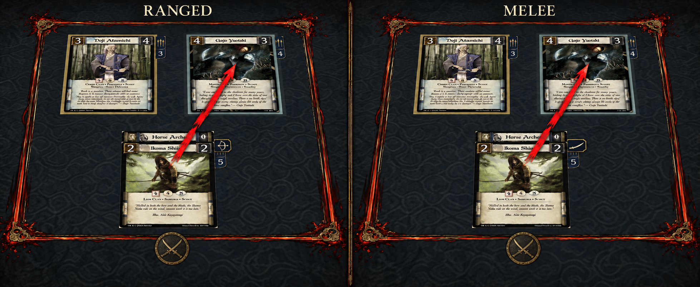
Exact approved F concept. The headings label the comparison only.
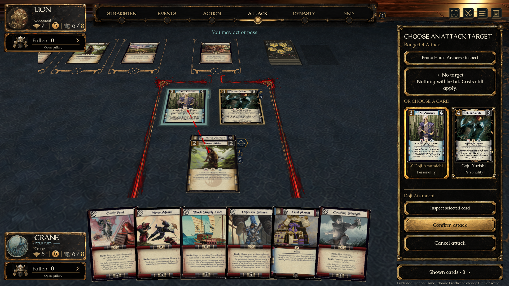
Actual native court at closer zoom. Full card faces, live counters, the red brush intention and the existing action panel remain intact.
Source / native at comparable source-card width
F source: physical card-mounted tab. Alfredo’s latest request replaces its overlapping arrangement with the sequenced native layout.Native: proportionally rendered atlas; whole spear/Force ribbon moved below the attack tab. Camera perspective differs from the illustrative source.
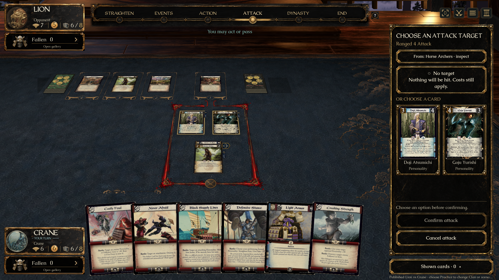
Normal playable view: Ranged selection.
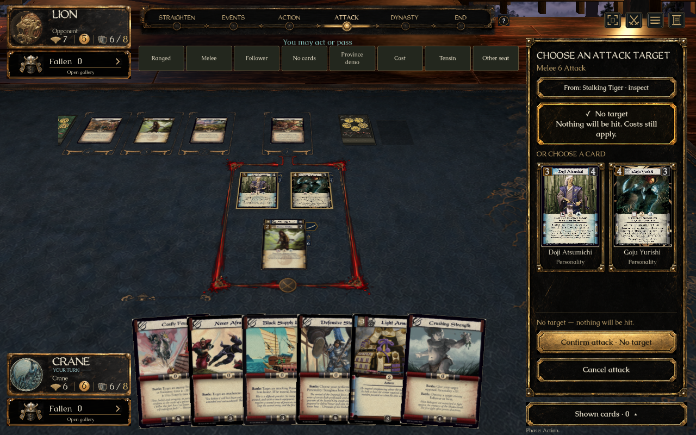
1280×800 reduced motion: Melee. Explicit No target keeps the type cue but removes the pointer.Native tab at its 90 ms slide midpoint, after the spear ribbon has moved clear.
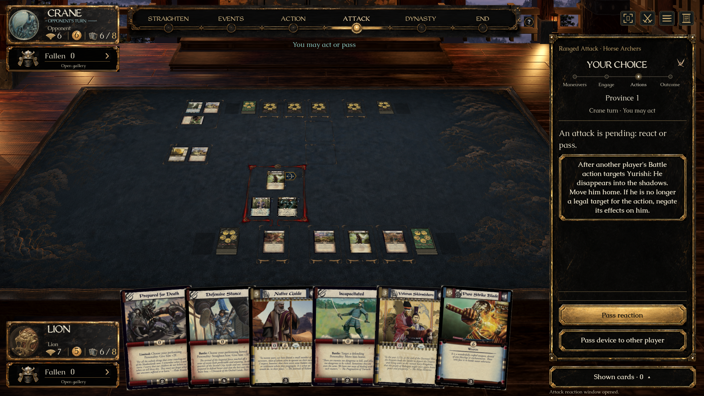
Public pending attack remains identifiable from the other seat. No private draft survives a seat switch.
Sequenced motion in the native renderer
First the spears and live numeral descend together; then the bow/katana enters the clear slot. The tab retracts before the ribbon returns. Quick reversals keep the current position, and reduced motion changes immediately. These are frozen frames from the actual game.
1 · Spears halfway down; attack tab still hidden.2 · Ribbon clear; attack tab halfway out.3 · Tab retracts while the spears stay lowered.4 · Tab hidden; ribbon returning to the card corner.
Earlier choice / brush implementation evidence
Approved straight red brush trail
Source and a viewport crop of the native court at comparable card scale. The native example selects the other legal target. Actual imagegen-derived paint is rendered as a straight broken line; card scans, text and rules remain live.
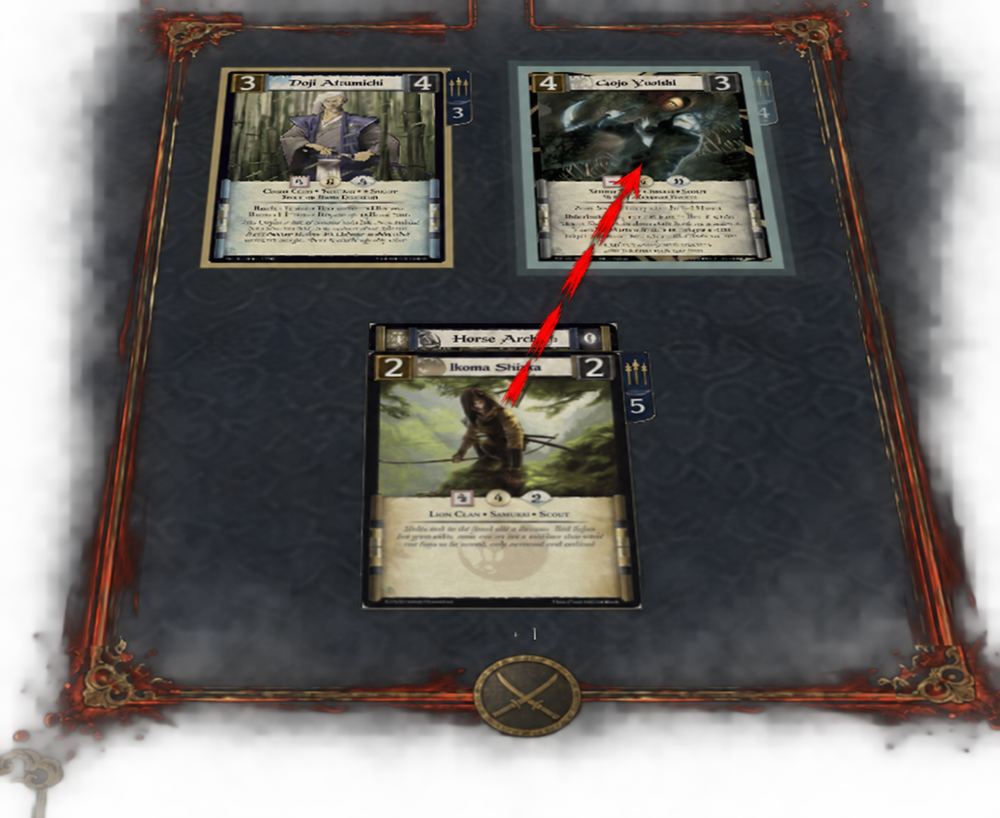
Alfredo-approved broken-brush direction.Native 1920×1080 capture, enlarged only by the browser. Different camera and target; no whole-screen equivalence claim.Actual playable view: pointer and full-card selection.
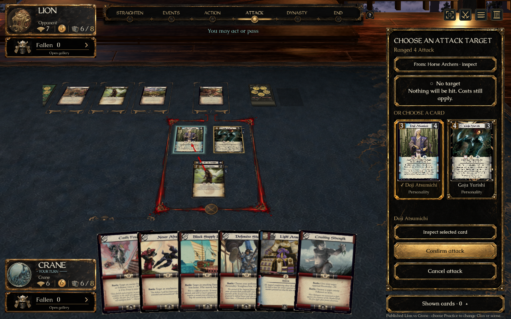
1280×800 reduced-motion capture. The arrow stays static and No target removes it.
Approved concepts and actual game at equal displayed widths. Full period scans, the approved lacquer atlas and Caudex/WeatheredQuill remain intact.
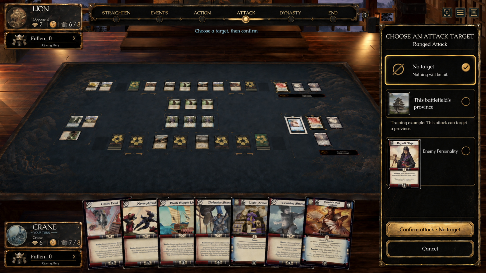
A — explicit choices before a separate confirmation.
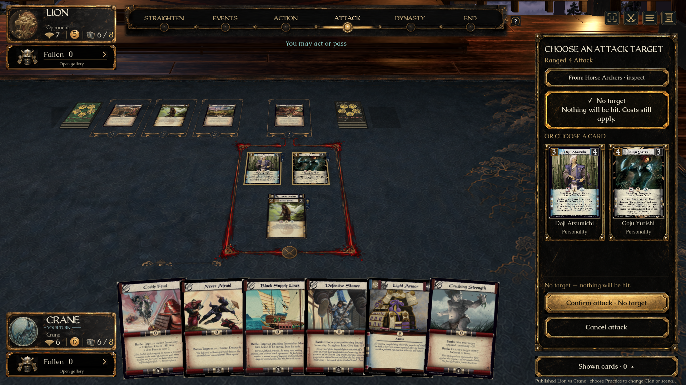
Native — No target explicitly selected; the table has no target arrow, and confirmation stays separate.
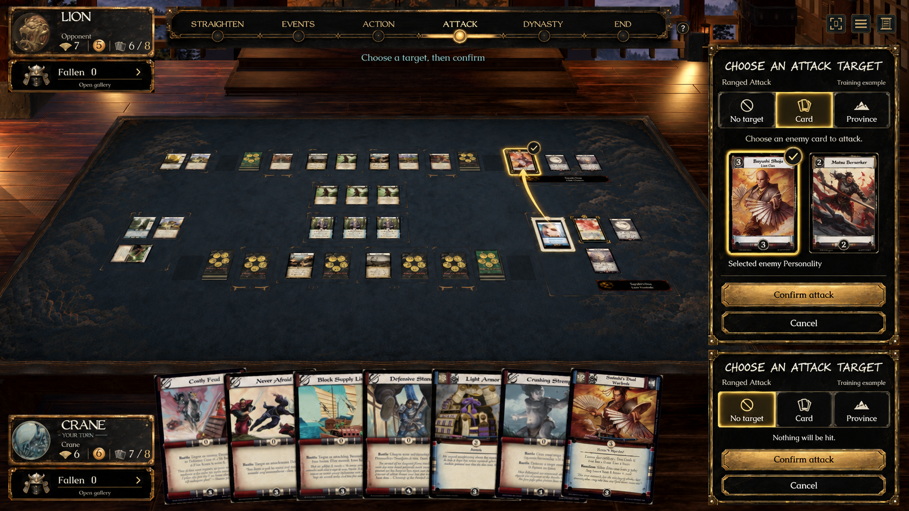
B — full card faces identify the offered targets.
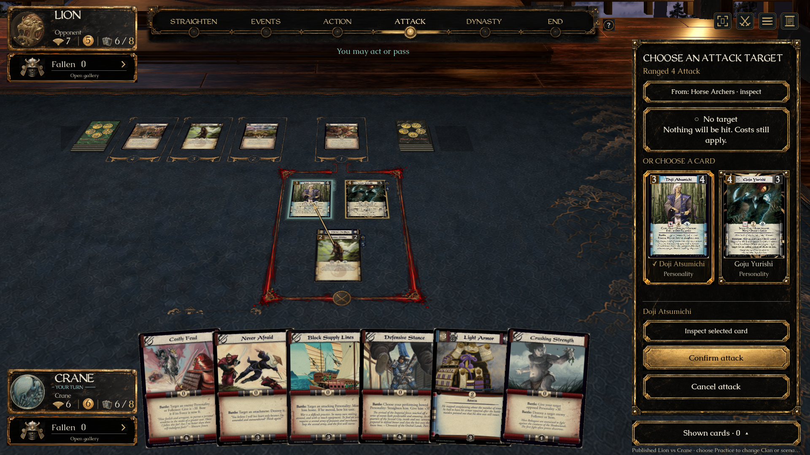
Native — full legal card faces in the sidebar, a selected-state frame, table intent arrow and full-size inspection.
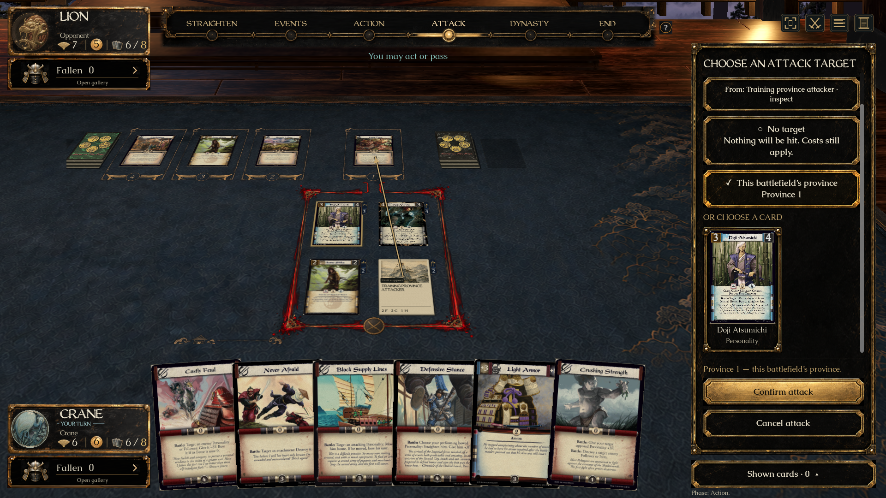
The training-only province option targets the battlefield’s province, never its Dynasty card. Published abilities show it only if the engine offers it.
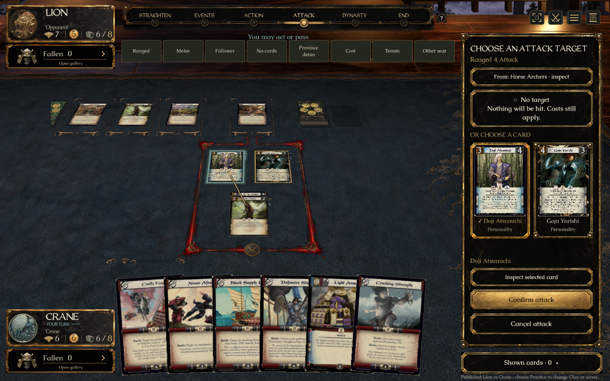
1280×800 with reduced motion and prepared-review navigation.
The chosen design combines the concepts in the existing game sidebar. Real printing, engine state, camera and existing ornamental materials replace the concepts’ illustrative content; whole-screen pixel identity is not claimed. No merge is authorized.